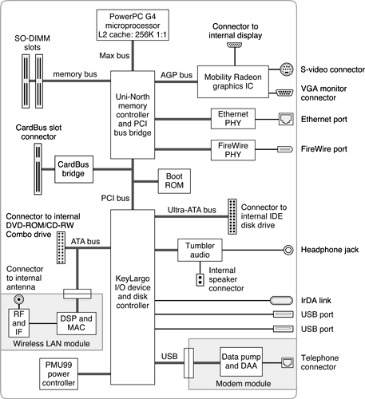

This section is an overview of the major ICs and buses on the computer's main logic board.
Figure 2-1 is a simplified block diagram of the main logic board. The diagram shows the input and output connectors, the main ICs, and the buses that connect them together.
Figure 2-1 Block diagram
The architecture of the PowerBook G4 computer is designed around the PowerPC G4 microprocessor and two custom ICs: the Uni-N memory controller and bus bridge, and the KeyLargo I/O device controller. Those three ICs occupy the center of the block diagram.
The PowerPC G4 microprocessor is connected to the Uni-N memory controller and bus bridge IC by a MaxBus bus. The bus clock speed is 133 MHz on the 667-MHz model and 100 MHz on the 550-MHz model. The Uni-N IC has other buses that connect with the KeyLargo IC, the main system RAM, and the graphics IC. The buses implemented by the Uni-N IC are summarized in Table 2-1, which is in the section "Memory Controller and Bus Bridge".
The Uni-N IC is connected to the KeyLargo I/O controller IC by a 32-bit PCI bus with a bus clock speed of 33 MHz. That bus also connects to the Boot ROM and the CardBus controller. The KeyLargo IC has other buses that connect with the hard disk drive and the DVD-ROM/CD-RW Combo drive, the power controller IC, the sound IC, the internal modem module, and the wireless LAN module.
Each of the components listed here is described in one of the following sections.